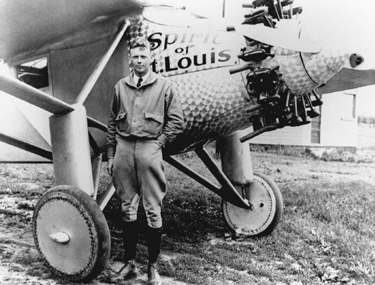

Un mécène du nom de Raymond Orteig offre 25000 dollars pour relier New York-Paris sans escale. Suite à cette publication un homme du nom de Charles Lindbergh décide de tenter sa chance. Il parvint à convincre un groupe de subventionneur de financer un avion special pour cette traversée.
Le décollage a lieu à Ne_York avec le Spirit of Saint-Louis le 20 mai 1927. Le pilote a fait le choix d’utiliser un appareil plus léger et avec un seul moteur. Et pour délester son avion de kilos supplémentaires : il ne prend pas de bagage et supprime sa jauge de carburant. Son objectif est d’ avoir un gros réservoir, installé derrière le moteur, empêchant toute visibilité vers l'avant. Il se diriger à l'aide d'un périscope, fixé sur le côté gauche de l'appareil.
Charles Lindbergh devient un héros mondialement connu et très médiatisé: à son retour, il est accueilli par quatre millions de personnes. Puis il fait une tournée victorieuse de trois mois aux Etats-Unis.
En 1940, il participe à la fondation de l'organisation America First, à Yale, avec l’objectif de s'opposer à l'entrée en guerre des États-Unis.
Le président Roosevelt ayant publiquement mis en doute sa loyauté, Lindbergh démissionne de son poste de colonel au ministère de la Guerre. Avec ironie, le ministre de l'Intérieur Ickes observe qu'il tient davantage à sa médaille allemande qu'à son grade américain !
source: